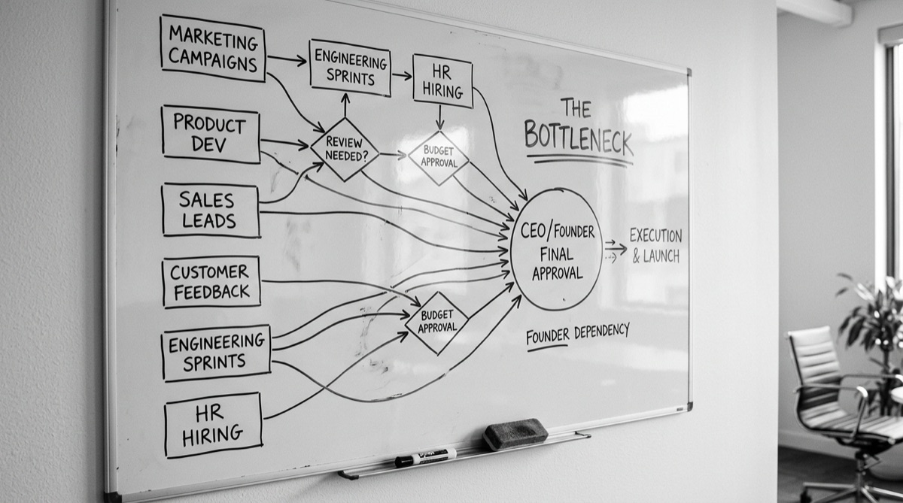

Most founders I work with are exceptionally capable people. They built something real on instinct, taste, and relentless execution. And for a while — often longer than expected — that works.
Until it does not.

There is a specific moment every founder recognizes. It is the moment they realize that growth is not reducing their workload. It is increasing it.
Every new hire creates more questions that route back to them. Every new client requires their personal involvement to ensure quality. Every decision — about tone, messaging, positioning, visual standards — gets escalated because no one has the authority or clarity to make it independently.
This is not a talent problem on your team. It is an infrastructure problem in your brand. And it tends to surface most acutely when a business hits a growth inflection — the $500K to $5M range is where brand infrastructure gaps become impossible to ignore.
If your brand only works when you are running it, you are not the founder. You are the ceiling.
Think about the last time a team member made a brand decision that felt wrong. Maybe they wrote a proposal in a tone that was too casual. Maybe a social post went out that did not represent the company the way you would. Maybe a new hire presented themselves to a prospect in a way that did not match what you have built.
Your instinct told you it was wrong. But you probably could not point to a document that told them how to get it right.
That gap — between what you know and what your team can access — is where brand breakdown lives.
After working with hundreds of founders, I have found that brand dependency almost always comes down to four undocumented elements:
When these four elements are documented, operationalized, and accessible to your team, two things happen. First, your team can execute without you. Second — and this is the one most founders underestimate — the quality of your brand's expression actually improves, because your standards are no longer filtered through whoever happened to be available.
At Abstract Creative, the work we do is essentially an extraction and translation process. We pull what lives in the founder's instincts — the accumulated judgment of years of building — and turn it into a system.
Not a static PDF that lives in a folder no one opens. An operational brand framework that your team uses daily to make decisions, communicate consistently, and represent your company at the level you have always envisioned.
The result is not just a better-looking brand. It is a brand that scales independently of the founder who built it.
Here is the question I ask every founder in our first conversation:
What is the one thing in your business that only you can currently answer?
Whatever comes to mind first — that is your bottleneck. And it is almost always a brand or positioning question that was never properly documented. Turning an unclear brand into a revenue system starts with answering that question in writing — and building the infrastructure to make sure your team never has to ask it again.
The good news is that once we identify it, it is fixable. Usually faster than founders expect.
Dependency limits scale. But it is not permanent. It is just undocumented.
Client Results
“Efren didn’t just design assets — he built a cohesive brand system that elevated how my business shows up everywhere. We’re regularly asked where our branding came from.”
Sebastian Millan
CEO, TMS — Tools, Materials & Supplies
“He has a rare ability to anticipate client needs proactively, which made the collaboration seamless and efficient. His attention to detail is evident in every deliverable. I highly recommend his services.”
Cathy Torres
CEO, Stamped Passport Society
“This wasn’t just branding — it was business transformation. Website, automation, first campaign — now we feel unstoppable. Our close rate went up immediately.”
Derrick Hendricks
CMO, Grammas

Written by
Founder, Abstract Creative — Brand Transformation Studio, Houston TX
Efren works with professional services firms between $500K and $5M to install the brand infrastructure they need to scale without drift — positioning, architecture, conversion systems, and growth channels built in the right sequence.
Free Download
The complete walkthrough of all four brand pillars — with assessment questions and failure patterns for each. Free, no fluff.
Get the Free BlueprintFoundation + Identity
Foundation and Identity take what lives in your head — positioning, standards, voice — and turn it into a system your team can execute without routing everything through you.
Book a 30 minute conversation. We'll identify your bottleneck and map what needs to be built to move past it.
Not sure where your brand stands? The free assessment identifies your weakest pillar in 5 minutes.
Take the Free Assessment →